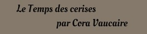
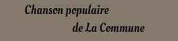
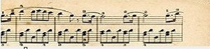
Un rendez-vous manqué
Des quatres sœurs, seule l’une d’entre-elles se mariera, ma grand-mère Léa. Marie, Maria et Augustine resteront célibataires et vivront ensemble à la ferme jusqu’à leurs vieux jours. D’elles, je n’ai qu’un souvenir de trois figures ridées par le soleil et le vent, de trois silhouettes se courbant avec le temps et s’éteignant l’une après l’autre.
C’est donc avec émotion que j’ai découvert une correspondance entretenue par Maria avec un autre jeune homme du pays envoyé à la guerre, Désiré Beaune. On y décèle les tout débuts d’une idylle qui ne se dit pas encore mais qui se lie entre les mots. Et comme on regrette les beaux jours et le temps des cerises, sans doute Maria a-t-elle dû souvent penser aux jours meilleurs d’avant la guerre …
Désiré est originaire d’un hameau du village de Virlet, à proximité du hameau des Raynauds. Comme les trois frères, il est agriculteur. Comme Auguste et Antoine il a rejoint le 17ème Régiment d’infanterie et participera aux mêmes batailles du mois d’Août dans les Vosges. Comme Antoine, il participera également à la bataille de la Marne. Comme Auguste il sera dans les tranchées de Notre Dame de Lorette. Comme Gabriel, son nom sera inscrit en lettres d’or sur le monument aux morts de son village …
C’est dans une carte d’Antoine datée du 29 Mars 1915 que l’on entend parler de Désiré pour la première fois. Né en Juillet 1892, Désiré fait partie de la même classe qu'Auguste et Antoine, la Classe 1912 comme en atteste son livret militaire.
Désiré est donc à la fois un copain d’enfance, un camarade de régiment du 17eme d’Infanterie et il est clair qu’il entretient une correspondance directe avec Maria.
Chers Parents,
Je pensais bien voir Auguste mais il n’a pas pu venir à Lyon. Il avait un peu de travail pour son lieutenant. Je l’attend un de ces jours puis je m’arrangerai pour aller le voir soit demain, soit dimanche.
Je suis allé attendre Désiré à Perrache à une heure et demie. Il m’a donné de vos nouvelles, il m’a dit que Maria lui avait dit que je n’écrivais pas assez souvent. Ce n’est pourtant pas le temps qui me manque mais la semaine dernière, j’attendais toujours du nouveau pour Auguste. C’est ce qui a fait que j’ai resté quelques jours sans vous écrire. Mais je me rattraperai cette semaine.
Auguste vous aura sans doute écrit, il a eu du travail ces jours.
Je vous embrasse tous.
Antoine
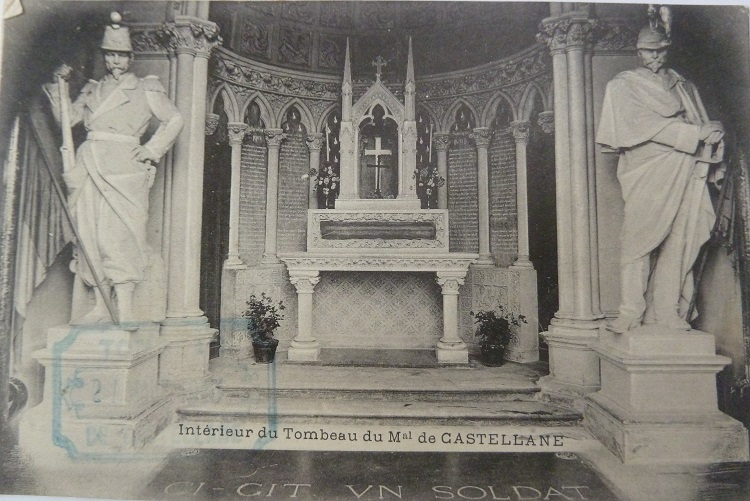
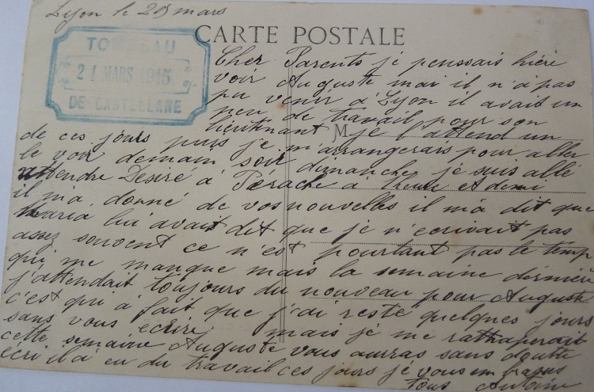
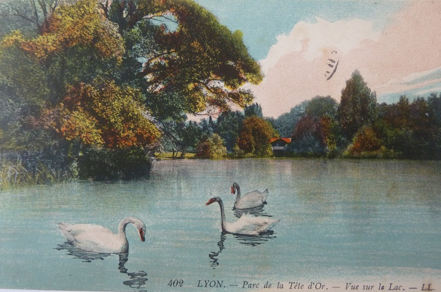
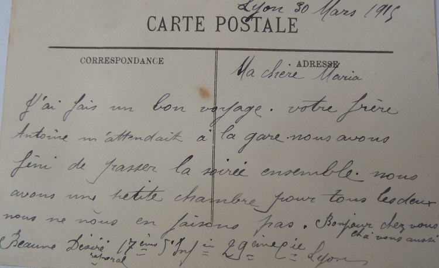
Ma chère Maria,
J’ai fait un bon voyage.
Votre frère Antoine m’attendait à la gare. Nous avons fini de passer la soirée ensemble.
Nous avons une petite chambre pour tous les deux. Nous ne nous en faisons pas.
Bonjour chez vous et à vous aussi.
Désiré Beaune
A cette époque, Désiré vient en fait de finir sa convalescence suite à une première blessure sur le front d’Artois le 19 Décembre 1914, dans le secteur de Notre Dame de Lorette.
Après la guerre des frontières dans les Vosges en Août 1914, puis la bataille de la Marne, Désiré a pris part à la première bataille d’Artois. Cette bataille est la première tentative de percée du front allemand après que le front se soit enlisé de la Mer du Nord à la Suisse. L’Allemagne a alors envahi la Belgique et une grande partie du Nord de la France où se trouvent les bassins miniers et une grande partie de l’industrie française ; faire reculer l’armée allemande et reprendre le contrôle de la région est donc un objectif majeur.
Dans ce contexte la prise du plateau de Notre Dame de Lorette occupé par les troupes allemandes est vital puisque ce plateau est la seule véritable hauteur dans ce paysage de plaine, son contrôle permettant d’assurer un feu nourri d’artillerie sur la plaine environnante. Au sein du 21eme Corps d’Armée, le 17eme régiment d’infanterie est justement chargé de conquérir les tranchées de la crête de Notre Dame de Lorette.
Pour en savoir plus sur la premiere bataille d'Artois :
En Savoir Plus
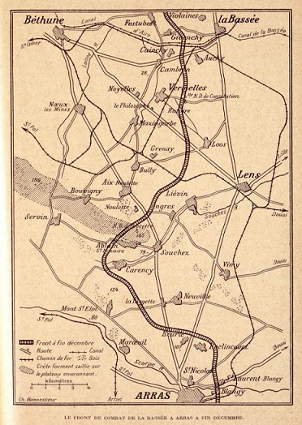
Menée par les généraux Joffre et Foch et supposée ne durer que du 17 au 19 Décembre, l’offensive sera un échec, en grande partie dû à un temps épouvantable transformant le champ de bataille en un véritable bourbier où les soldats s’enfoncent jusqu’aux genoux et où les tranchées sont quasiment inondées.
De cette bataille, Désiré ramènera sa première blessure décrite avec précision dans son livret militaire « Plaie talon droit par éclat d’obus – projectile non extrait ». S’ensuit une période à l’hôpital militaire et une convalescence comme les trois frères quelques mois plus tôt.
Fin Mars, Désiré rejoint donc à nouveau le dépôt du 17eme à Lyon et il retrouve Antoine, son camarade de Classe et de Feu. C’est une brève période de repos et relative insouciance, après une campagne éprouvante d’Août à Décembre 1914.
Cher frère,
Je t’écris ce soir pour te remercier des belles cartes que tu nous a envoyées pour la fête de Pâques. Remercie donc bien Désiré à ma place.
Nous avons reçu des nouvelles d'Auguste. Ce que j’attends maintenant, c’est ta photo, J’aurais bien voulu que tu aies pu passer les fêtes avec nous ainsi que Auguste et Gabriel. Nous sommes tous en bonne santé.
Cher Antoine, je suis été contente de la carte que tu as envoyée. Je l’ai envoyée à Gabriel, ça le désennuiera un petit moment. Se plaint-il quand il t’écrit.
Je t’embrasse bien fort ainsi que tous.
Bonjour à Désiré
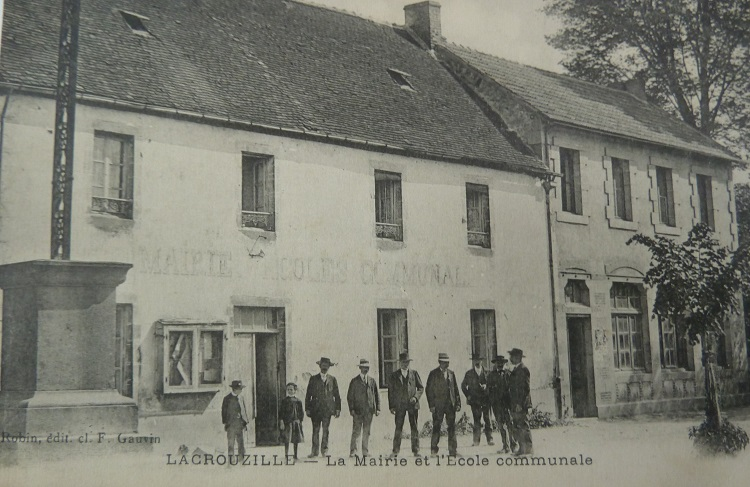
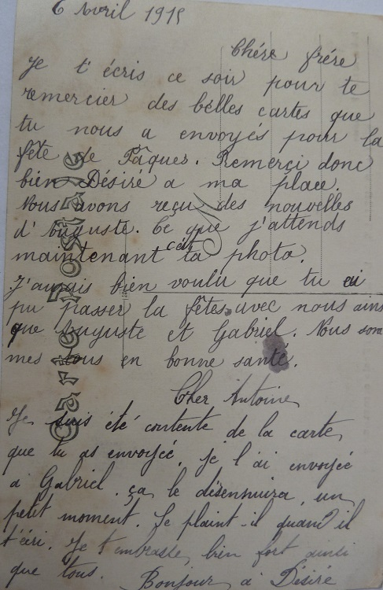
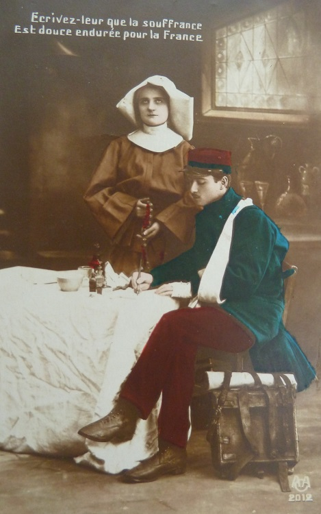
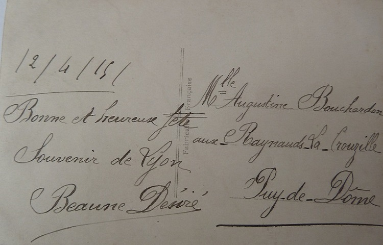
Bonne et heureuse fête.
Souvenir de Lyon
Désiré Beaune
Mais la trêve ne dure pas longtemps. Désiré est rétabli et il doit rejoindre son régiment en camp d’entrainement à Nyons, dans la Drôme. De toute évidence, Désiré est un vaillant soldat passé Caporal à la fin Août 1914. Auprès des classes plus jeunes, il fait sans doute figure de vétéran et il a la responsabilité d’une escouade importante.
Les premières cartes sont pour ses frères d’arme …
Amitiés et bon souvenir d’un copain.
Beaune
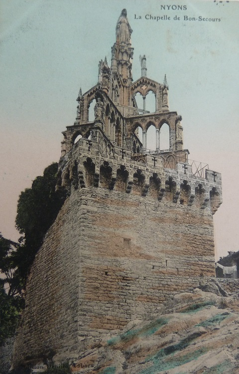
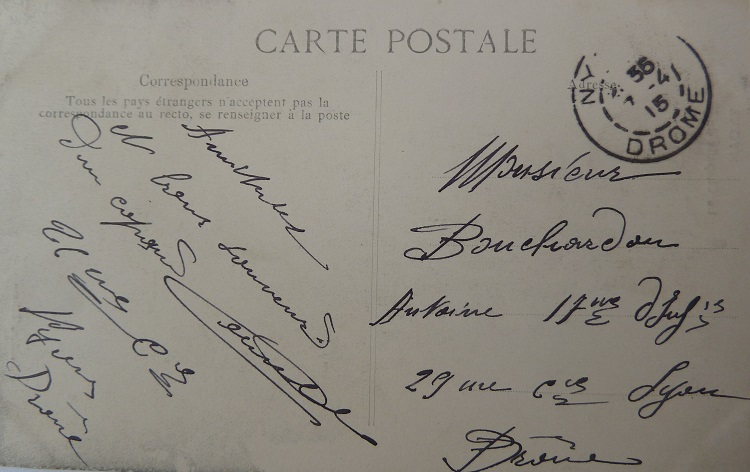
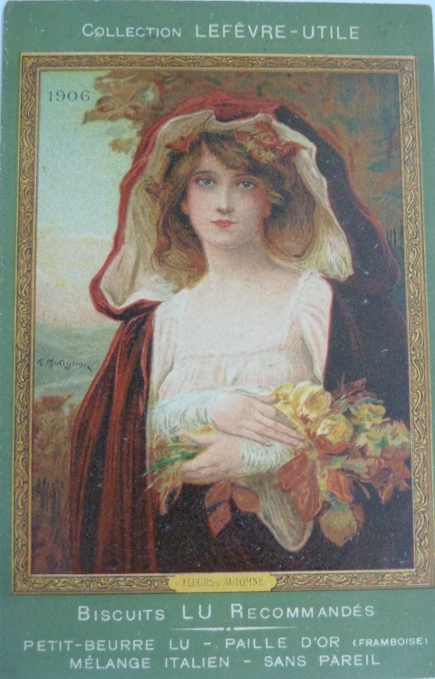
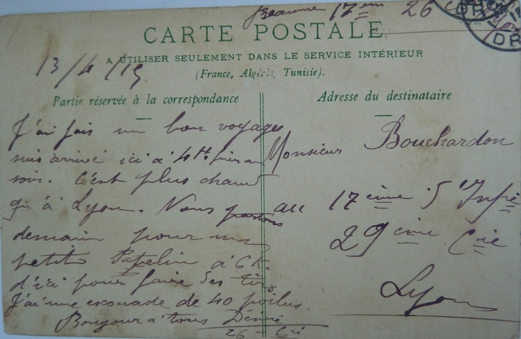
J’ai fait un bon voyage, suis arrivé ici à 4 heures du soir.
C’est plus chaud qu’à Lyon. Nous partons demain pour un petit patelin à 6 kilomètres d’ici pour faire des tirs.
J’ai une escouade de 40 poilus.
Bonjour à tous.
Désiré
Mais très vite, il envoie une carte à Maria avec un brin de mimosa et Maria s’empresse d’en informer son frère.
Chère Maria,
J’ai quitté votre frère dimanche dernier.
J’étais bien habitué avec lui, mais ils n’ont pas voulu m’y laisser. On m’a envoyé à Nyons et en arrivant à Nyons, on a envoyé ma Compagnie un peu plus loin, à 7 kilomètres, afin de faire de la place pour la classe 16 qui rentrait.
Je vous dirais que Nyons est plus chaud que Lyon.
Je vous envoie une petite branche de mimosas. Vous voyez que le pays est chaud pour qu’ils poussent ici.
Bonjour à tous. Votre ami qui vous embrasse.
Désiré
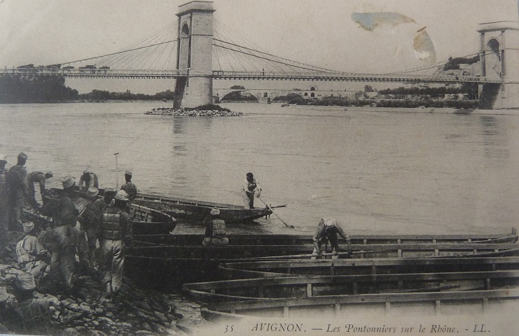
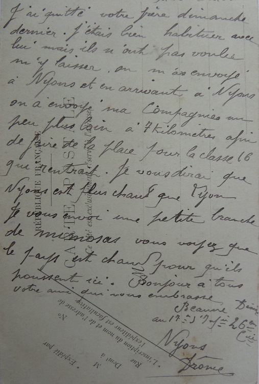
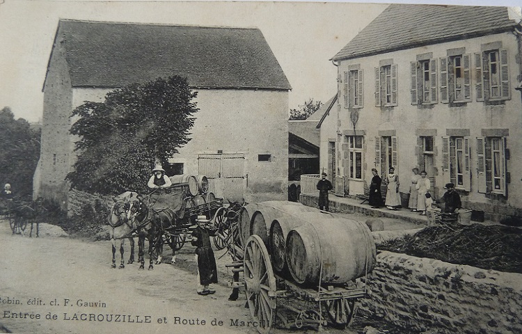
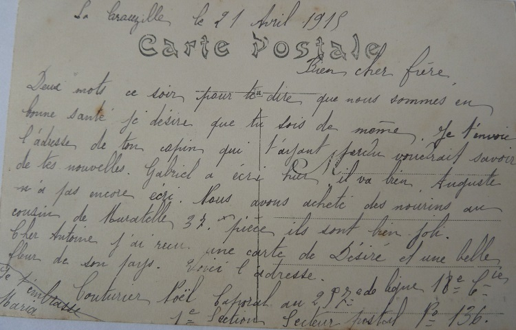
Bien cher frère,
Deux mots ce soir pour te dire que nous sommes en bonne santé, je désire que tu sois de même.
Je t’envoie l’adresse de ton copain qui t’ayant perdu voudrait savoir de tes nouvelles. Gabriel a écrit hier, il va bien. Auguste n’a pas encore écrit.
Nous avons acheté des nourins au cousin de Muratel, 37 francs pièce, ils sont bien jolis.
Cher Antoine, j’ai reçu une carte de Désiré et une belle fleur de son pays.
Je t’embrasse. Maria
Cette fois-ci, c’est une pensée que Désiré attache à sa carte pour Maria.
Ma chère Maria,
J’ai reçu des nouvelles de votre frère Antoine. Il me dit que son frère est dans la Somme. C’est sans doute Auguste qu’il veut dire.
Envoyez-moi donc son adresse, vous me ferez bien plaisir.
On forme ici un nouveau bataillon de marche, moi j’en fais partie. Je ne sais pas à quand nous partirons ni où nous irons.
Bien le bonjour chez vous.
Un baiser de votre ami.
Désiré
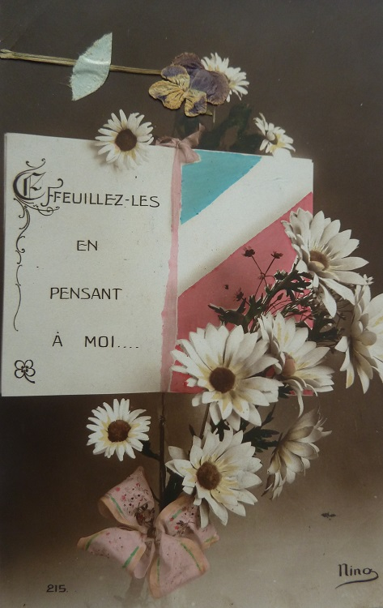
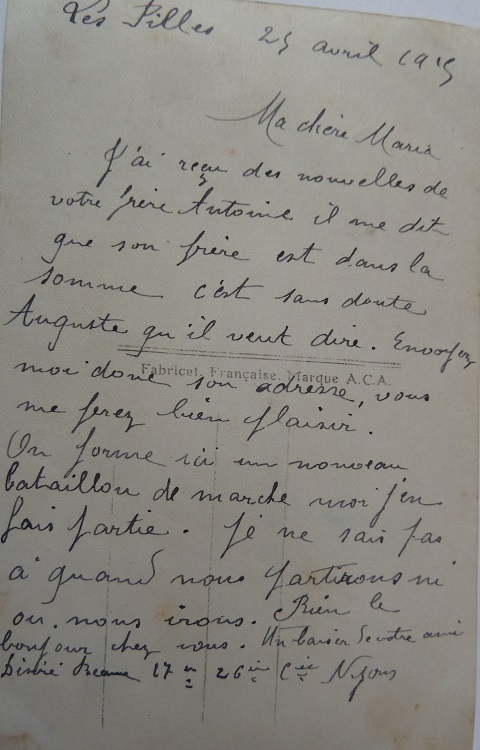
Mais déjà, la menace du départ au front se rapproche, même si Désiré semble avoir un sursis. Sans doute Maria lui demande t’il si il partira bientôt, mais ses cartes et lettres à Désiré resteront un secret …
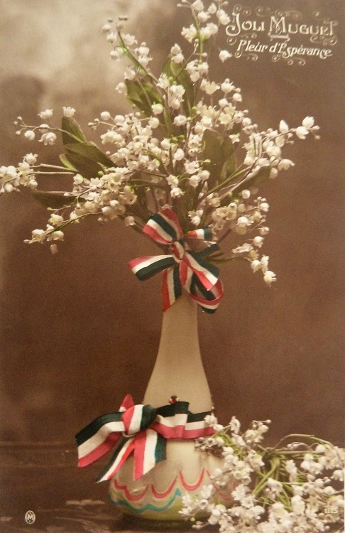
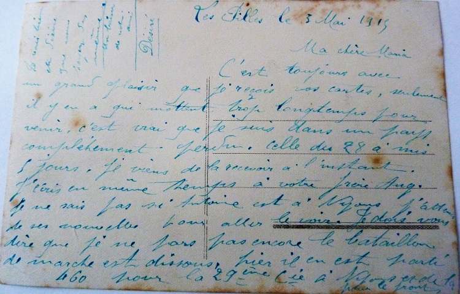
Ma chère Maria,
C’est toujours avec un grand plaisir que je reçois vos cartes, seulement il y en a qui mettent trop longtemps pour venir. C’est vrai que je suis dans un pays complètement perdu. Celle du 28 a mis cinq jours, je viens de la recevoir à l’instant.
J’écris en même temps à votre frère Auguste. Je ne sais pas si Antoine est à Nyons, j’attends de ses nouvelles pour aller le voir.
Je dois vous dire que je ne pars pas encore. Le bataillon de marche est dissous. Hier, il en est parti 460 pour la 29eme Compagnie à Nyons, et de là pour le front.
Un baiser de votre ami.
Désiré
Ma chère Maria,
Antoine doit être content d’être réformé. Il a eu de la chance.
J’espère que vous avez toujours de bonnes nouvelles de Gabriel et d’Auguste.
Moi je vais bien pour le moment et désire que vous soyez de même.
Bonjour à vos parents et à Antoine.
Bons baisers de votre ami.
Désiré
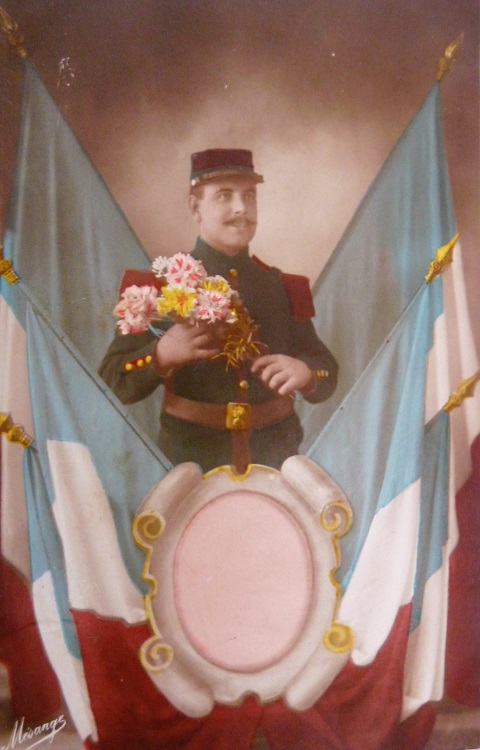
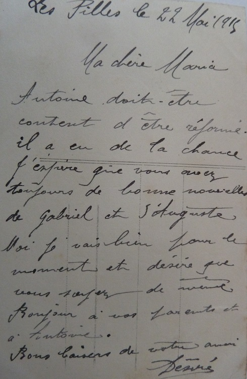
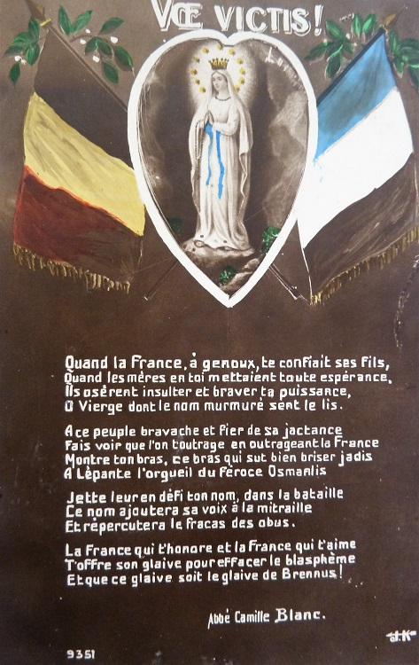
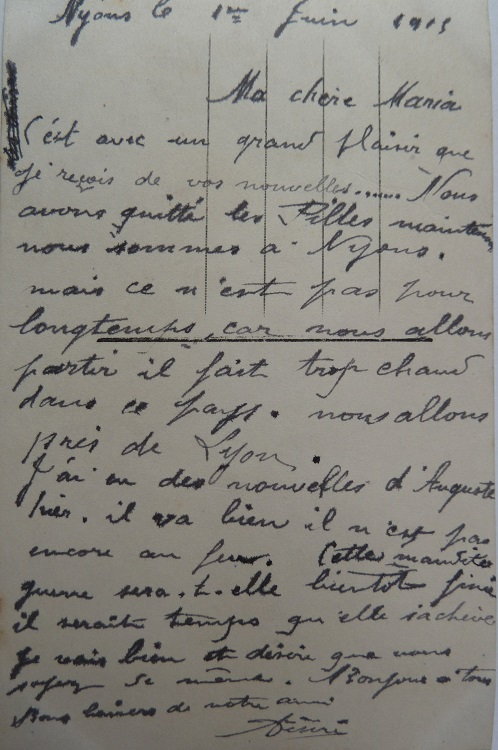
Ma chère Maria,
C’est avec un grand plaisir que je reçois de vos nouvelles.
Nous avons quitté les Pilles, maintenant nous sommes à Nyons. Mais ce n’est pas pour longtemps, car nous allons partir. Il fait trop chaud dans ce pays. Nous allons près de Lyon.
J’ai eu des nouvelles d’Auguste hier, il va bien. Il n’est pas encore au front.
Cette maudite guerre sera-t-elle bientôt finie. Il serait temps qu’elle s’achève.
Je vais bien et désire que vous soyez de même.
Bonjour à tous. Bons baisers
Voici deux cartes entre copains de régiment – sur l’une d’entre elles, on y voit Désiré en compagnie d’autres soldats lors de la campagne du 17eme RI dans la Somme en 1914.
Je suis chez Cornillac et nous t’envoyons le bonjour ainsi qu’à Paul s’il est toujours à Lyon.
Ton ami qui te serre la main.
Désiré Beaune
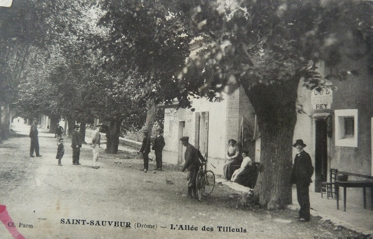
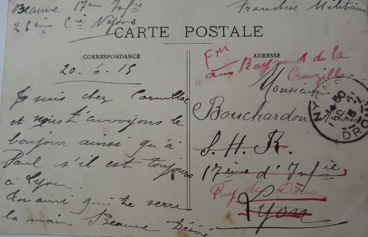
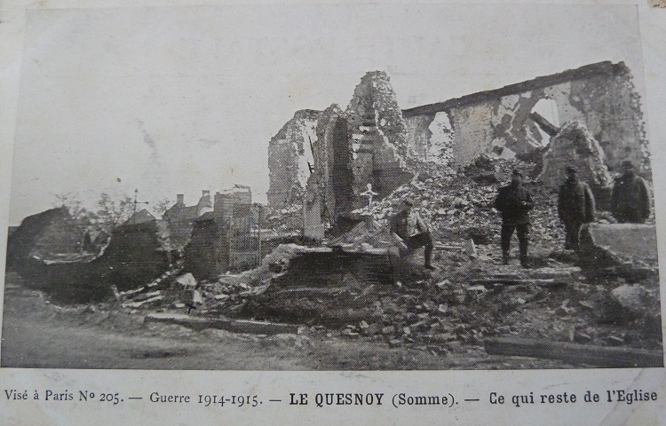
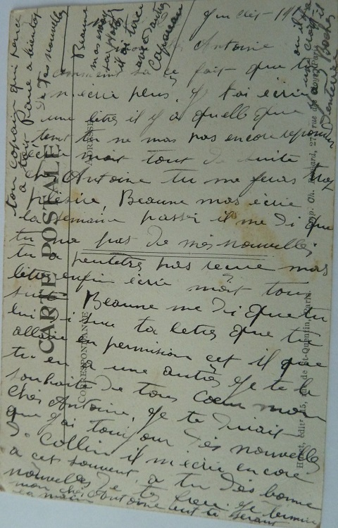
Mon cher Antoine,
Comment ça se fait que tu n’écris plus. Je t’ai écris une lettre il y a quelque temps, tu n’as pas encore répondu.
Ecris moi tout de suite cher Antoine, tu me feras trop plaisir. Beaune m’a écrit la semaine passée, il me dit que tu n’as pas de mes nouvelles. Tu as peut-être pas reçu ma lettre, enfin écris moi de suite.
Beaune me dit que tu lui as dit dans ta lettre que tu allais en permission. Je te dirais que j’ai toujours des nouvelles de Collin, il m’écrit encore assez souvent. As-tu des nouvelles de ton frère.
Je termine , mon cher Antoine, en te serrant la main. Ton copain qui pense à toi.
Beaune m’a envoyé sa photo où il est avec d’autres caporaux.
Où il y a une croix, il y a trois boches d’enterrés.
Arrive l’été 2015 et Désiré obtient finalement une permission agricole et rentre au pays pour quinze jours. Par chez nous, les paysans sont durs à la tâche et bien souvent les choses de la terre l’emportent sur les choses du cœur. Sans doute, cette idylle naissante entre Maria et Désiré ne s’avoue pas encore. Peut être, par timidité, par pruderie mal placée, par souçi du quand dire t’on, ils ne se rencontreront pas.
Ma chère Maria,
Je ne suis plus à Nyons depuis une douzaine de jours.
Nous sommes dans un pays moins chaud que Nyons, c’est à peu près comme chez nous. Les montagnes sont moins hautes qu’à Nyons aussi.
J’ai reçu une lettre d’Antoine quand il est arrivé à Lyon.
Bonjour à tous.
Votre ami qui vous embrasse.
Désiré Beaune
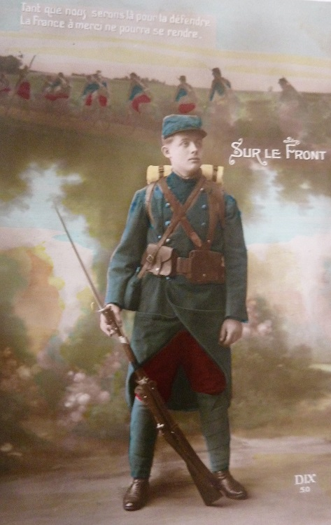
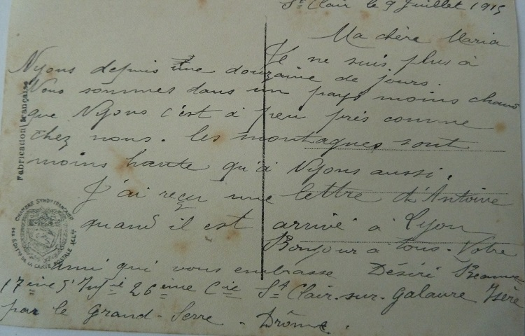
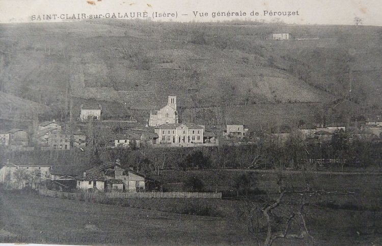
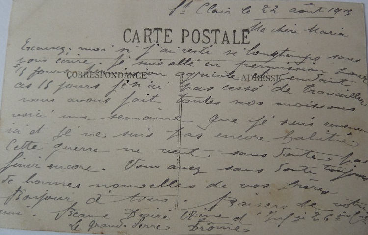
Ma chère Maria,
Excusez-moi si j’ai resté si longtemps sans vous écrire.
Je suis allé en permission pour 15 jours, permission agricole, et pendant ces quinze jours, je n’ai pas cessé de travailler. Nous avons fait toutes nos moissons.
Voici une semaine que je suis revenu ici et je ne suis pas encore habitué. Cette guerre ne veut sans doute pas finir encore. Vous avez sans doute toujours de bonnes nouvelles de vos frères.
Bonjour à tous.
Baisers de votre ami.
Désiré Beaune
C’est un rendez-vous manqué que Maria a dû regretter longtemps, puisque Désiré ne rentrera plus jamais au pays. Comme le dit Désiré dans sa carte, cette maudite guerre ne veut donc pas finir et dans les années qui suivront le conflit, Maria songera sans doute à ce qui aurait pu être mais qui n’a pas été ...
Dans le Grand Troupeau, Jean Giono décrit bien cette attente de celle qui reste au pays, et l’excitation et le bonheur qu’apportent le retour de l’être aimé. Dans l’extrait qui suit, Madeleine va à la rencontre d’Olivier, son ami exilé à la guerre et de retour, pour un temps, au village …
… Olivier mâche le bout d’un figeon de figuier : une passion de son jeune âge. Elle est revenue. Il a retrouvé l’ancien geste de ses petites mains, il a mâché la tige laiteuse et, tout d’un coup, la vie lui a paru large. Il oublie; il serre dans ses dents ce morceau de bois vivant, jeune, gonflé de lait, et il suce la sève amère.
« Tu as déjà fait la vaisselle? demande Julia.
— Oui.» Madeleine rougit et elle se met à chercher dans la corbeille à ouvrage.
« Et la soupe aux cochons?» Madeleine relève la tête. Son visage est tout rouge avec le sang à pleines joues et, au milieu de ce rouge, son regard est tout doux.
Le grand ménage de la ferme est déjà fait. C'est propre, astiqué et lavé. On a passé la peau humide sur les dalles. Les chaises sont rangées contre le mur. La table est nette comme une pierre.
«Tu es bien en avance», dit Julia. Elle s’en va sur la vague de ses hanches rondes. En tirant la porte elle regarde du côté de Madeleine. Madeleine cherche dans la corbeille à ouvrage.
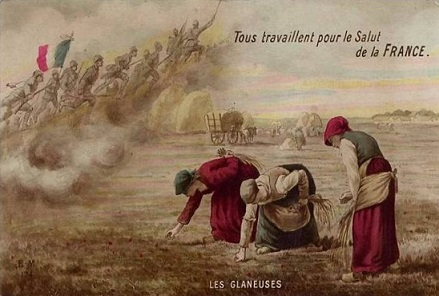
Dans la chambre de Julia l’épais volet fermé à bloc retient l'ombre. On entend les abeilles du dehors qui bourdonnent contre le joint des planches. Le vent frappe les murs du plat de la main.
Elle est là debout dans l’ombre, dans la fraîcheur, dans l'odeur des raisins et des abricots qui sèchent sur les éclisses de cannes.
Toujours seule, alors! Seule avec ces fruits doux et ces bruits. Seule avec la vie. Elle en a les lèvres brûlées. Elle passe sa belle langue sur ses lèvres. Avant il y avait aussi cette révolte du sang. Mais le Joseph était là avec ses bras nus, sa poitrine fourrée comme un dos de bélier. La terre tout autour gardait la marque de ses pas et de tous les clous de ses souliers.
En bas, une porte crie doucement. Julia va pousser le volet et regarde. C’est Madeleine. Elle sort, comme hier, à la même heure, bousculée de vent, avec son visage extasié.
La terre commande.
« Comme un jésus de plâtre, Il est comme un jésus de plâtre. Olivier, Olivier ! »
Madeleine court dans les vignes.
Le ciel solitaire et tout nu pèse de son bord tranchant sur l'horizon des collines. Rien sur le plateau que le vent. Les arbres sautent autour de leurs ombres comme des chèvres attachées.
À la couleur du jour elle sait qu’il est déjà là-bas à l’attendre, à l’espérer de tout son corps d'homme, sur cette pente des genêts, dans les lits d'herbe de la terre. Ahl elle en a le souffle coupé, et de ce vent, et de ce désir, et de ce besoin d’obéir à la grande obéissance. Le premier jour qu’il était là, c’était six heures d’automne, avec ce grand soir de sang du commencement du vent, et il a sifflé.
Il l'avait serrée dans ses bras, Il ronronnait doucement.
Il est comme un jésus de plâtre. Ah ! ce qu’il a fallu donner !
Non, elle a tout donné de bon vouloir et de plein consentement, avec la belle joie de donner tout ce qu’on a à ce qu'on aime... Obéir ! mais ne plus jamais revoir ce qu'il a fallu voir à ce premier rendez-vous : cet Olivier tout frémissant comme un cheval battu, cet Olivier plein de faim et de soif, cet homme tout défait à force de mort et de bataille.
Elle était le pain. Elle a dit : « Mange-moi ! » Elle est venue d’elle-même sous la dent, avec sa lèvre toute chaude et son corps ouvert. Elle est le pain avec la mie et la croûte, le léger et le lourd. Se mêler à lui, se joindre à lui par tout son corps, l’apaiser, le nourrir, le faire téter à sa chair de femme neuve ; lui donner son lit de paix et de joie; se donner, puisqu’elle est le pain de cette grande faim d’homme et de malheur.
Quand elle y pense dans le jour elle en a le feu dans le visage. Mais la couleur de l’heure et du moment est venue, Il attend. Il est là-bas dans le lit d’herbe. II attend qu’elle vienne s’allonger contre lui.
Hier, elle est allée voir la maman.
« Les premières nuits, a dit la maman, il sautait dans son lit comme un diablon; je me suis levée pour le recouvrir et lui parler. Il n’entendait pas; il soufflait dans ses dents serrées ; il avait des ronds de coudes qui m'ont fait presque sauter la lampe des doigts. Maintenant, il est docile au sommeil comme un petit saint : pas plus de bruit qu’un jésus de plâtre. »
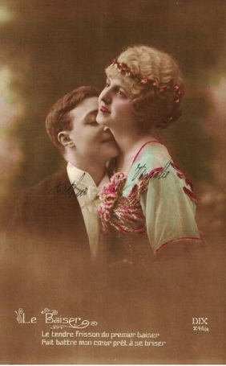
Madeleine court dans les vignes sans regarder derrière elle et elle tape avec le plat des mains sur ses jupes qui ballonnent.
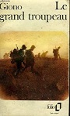
Extraits - Le Grand Troupeau - Jean GIONO
Cette carte de Maria à Antoine n’est pas datée mais tout laisse à penser qu’elle est écrite en Septembre ou Octobre. C’est dans cette carte que nous apprenons, la disparition et vraisemblablement la mort de Désiré … « Ils le croient perdu » écrit Maria.
Je t’ai écris hier.
Je te disais que nous ne savions rien de l’étau. La lettre d’avis est arrivée hier. Le cousin l’aura bien aujourd’hui.
C’est vrai que depuis quelques temps, Désiré n’a pas écrit. Ils le croient perdu. Tu sauras peut-être de ses nouvelles .
Je termine en t’embrassant, Augustine est contente de sa carte.
Les femmes vont être soldats.
Ta sœur qui pense à toi.
Maria
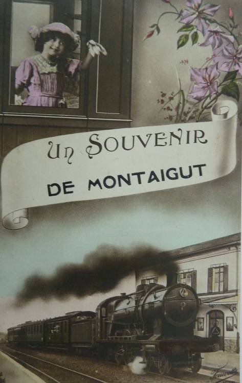
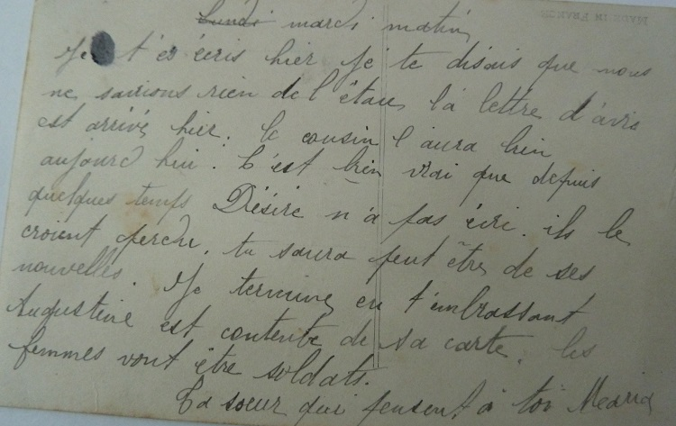
Après sa permission agricole du mois d'Août, Désiré a rejoint le dépôt du régiment et de là a été à nouveau envoyé au front. Il retourne en fait dans le même secteur où il a été blessé, la plaine d’Artois et le plateau de Notre Dame de Lorette.
Depuis son départ en Décembre 1914, la ligne de front a peu changé dans le secteur malgré une offensive majeure lancée en Mai 1915 connue sous le nom de 2eme bataille d’Artois. Cette bataille dure jusqu’en Juillet 1915, sans réel vainqueur, et ce sera la dernière offensive d’envergure sur le front de l’Ouest avant la 3eme bataille d’Artois en Septembre.
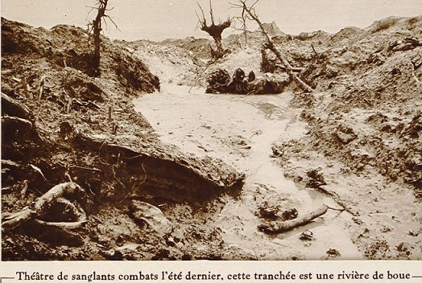
La Compagnie de Désiré fait partie des renforts qui retournent en Artois début Septembre en préparation de cette nouvelle bataille. L’offensive franco-britannique est dirigée par le général Foch et s’étend sur 32 kilomètres de front entre La Bassée et Arras. Elle doit se produire de façon simultanée avec l’attaque majeure menée par l’armée française en Champagne.
Le plan d’attaque est simple et brutal : écraser les positions ennemies par quatre jours de bombardements ininterrompus, avec un final apocalyptique de quatre heures juste avant que l’infanterie ne sorte des tranchées. L’assaut doit être massif et continu, les réserves ayant cette fois été acheminées au plus près du front.
À l’instant prévu, 12 h 25 le 25 Septembre, les soldats français s’élancent hors des tranchées sur tout le front. Ils se heurtent immédiatement aux feux terribles de mitrailleuses, en même temps que l’ennemi exécute un violent tir de barrage d’artillerie lourde, tout cela dans un enfer de boue.
Pour en savoir plus sur la troisième bataille d'Artois :
En Savoir Plus
À l’été 2015, l’écrivain Roland Dorgeles sert dans un régiment d’infanterie et participe à la 2eme bataille d’Artois à Neuville-Saint-Vaast. C’est dans les tranchées qu’il commence à écrire Les Croix de Bois, roman qu’il publiera juste après la guerre en 1919.
Dans l’extrait suivant, Dorgeles décrit une attaque et la sortie des tranchées dans la bataille pour Notre Dame de Lorette, qu’il renomme affectueusement Notre Dame des Biffins (en argot, le biffin est un soldat d’infanterie). C’est à une telle bataille qu’Auguste et Désiré prendront part en Septembre 1915.
Cette bataille sera d’ailleurs reconstituée dans le film Les Croix de Bois, 14 ans après la fin du conflit. Ce film est tourné sur les lieux précis de Notre Dame de Lorette, sur une terre encore marquée par les séquelles de la guerre, et avec des acteurs dont la plupart sont des anciens combattants … cela lui donne une légitimité et une véracité uniques.
La compagnie entière était entassée là, grand bouclier vivant de casques rapprochés, devant quatre échelles grossières. La couverture roulée, pas de sac, l'outil au côté : « Tenue de gala », avait blagué Gilbert.
À notre droite, empilée dans la même parallèle, une compagnie d’un régiment de jeunes classes venait de mettre baïonnette au canon : ils devaient sortis avec nous, en première vague. Toutes les sapes, toutes les tranchées étaient pleines, et de se sentir ainsi pressés, reins à reins, par centaines, par milliers, on éprouvait une confiance brutale. Hardi ou résigné, on n'était plus qu’un grain dans cette masse humaine. L'armée, ce matin-là, avait une âme de victoire.
Des camarades, l’œil luisant, les joues rouges, parlaient vite, gagnés par une sorte de fièvre. D’autres restaient muets, tout pâles, et le menton tremblant un peu.
Par-dessus les sacs à terre on regardait les lignes allemandes, ensevelies sous un panache de fumée où craquaient des éclairs ; plus loin encore, dans la plaine, trois villages semblaient brûler, et notre artillerie tirait toujours, dans un tonnerre rejaillissant où se confondaient les arrivées et les départs. Les champs tanguaient sous cette fureur, et je sentais, contre mon coude, la tranchée frémir et s’effriter.
À tout moment, Gilbert regardait sa montre. Cette attente angoissante lui crispait le cœur ; il eût voulu entendre le signal, partir tout de suite, en finir. ll pensa tout haut :
— Ils font durer le plaisir.
Sur le parapet, entre deux touffes d’herbe, deux bêtes se battaient : un gros scarabée mordoré à la cuirasse épaisse et un insecte bleu aux fines antennes. Gilbert les regardait, et, quand le scarabée allait écraser l’autre, il le renversait sur le dos, du bout du doigt. De son front une goutte de sueur tomba sur la petite bête bleue, qui secoua ses ailes bigarrées.
— Attention, il va être l'heure, prévint un officier sur notre droite.
Plus près, Cruchet commanda :
— Baïonnette au canon... Les grenadiers en tête.
Un frisson d’acier courut tout le long de la tranchée, Penché, Gilbert observait toujours ses insectes, n'écoutant pas battre son cœur. Le scarabée secouait sa lourde carapace, mais l’autre l’avait saisi entre ses longues antennes, et il le maintenait, ne le lâchait plus. Posément, Cruchet serrait sa jugulaire. Debout sur la première marche d’un escalier de sacs à terre, il nous dominait tous. Il nous regarda.
- Mes amis... Ttt... Ttt... C’est pour la France, hein !.. Une belle attaque... Nous allons enlever ça …
Était-ce l’émotion, il me sembla que sa voix était moins sèche, moins coupante qu’à l’ordinaire. Comme une brusque révélation, on comprenait ce mot : un chef, On serrait le ceinturon, on repoussait l’outil qui battait la cuisse. Au pied d’une échelle, Berthier était prêt à sortir. En tournant la tête, il vit Morache, le visage décomposé.
- Après vous, mon lieutenant, fit-il militairement, en s’écartant d’un pas.
L'autre, défait, vit un prétexte.
- Quoi, bredouilla-t-il... Vous avez peur de sortir le premier ?.…. Sans rien dire, le sous-lieutenant se retourna et remit le pied sur l’échelon. De dos, on vit simplement son haussement d’épaules.
- Morache qui se dégonfle ! cria Vieublé dans le bruit.
Le lieutenant avait peut-être entendu, mais il ne broncha pas. Montant de ce tas d'hommes hérissé de baïonnettes, la voix gouapeuse continuait :
- Ça ne suffit plus maintenant d’avoir de la gueule … Il faut y aller … C’est plus dur que de foutre les types en taule … On est tous égal, ce coup-ci.
On n’entendait plus que cette voix railleuse sous le canon, et les copains riaient, sans colère, comme si ces mots les avaient soulagés.
Les corps prêts à surgir se balançaient, battant déjà le parapet, comme un jusant.
En jets aigus, des 75 sifflèrent et, au même instant, le grondement de la lourde parut se taire ou s'éloigner.
- Nous y sommes ?... demanda Cruchet, d'une voix plus forte.
Les cœurs sautèrent un grand coup, ou un seul cœur pour cette foule armée.
— T'as bien l'adresse de chez moi ? dit encore Sulphart à Gilbert, d'une voix saccadée dont l’émotion entrechoquait les mots.
Tiens, le scarabée doré ne bougeait plus, l’insecte l'emportait.. Oh! cette poudre, quelle âcre puanteur !… Une rumeur monta vers la droite, des cris ou une chanson. « Les zouaves sont sortis ! » Une rafale de 105 éclata, cinq coups de cymbales.…
— En avant la troisième ! cria le capitaine.
— En avant !.…
Des cris, une bousculade, un homme qui retombe en jurant, des fusils qui s’accrochent... Les tempes bourdonnantes on s’agrippe au parapet, puis on se redresse, les jambes un peu molles. On regarde la plaine immense, la plaine nue... « En avant ! » On est sorti, on court …
… Épuisés, haletants, nous ne courions plus. Une route coupait les ruines et une mitrailleuse invisible la criblait, soulevant un petit nuage à ras de terre. « Tous dans le boyau ! », cria un adjudant.
Sans regarder, on y sauta. En touchant du pied ce fond mou, un dégoût surhumain me rejeta en arrière, épouvanté. C'était un entassement infâme, une exhumation monstrueuse de Bavarois cireux sur d’autres déjà noirs, dont les bouches tordues exhalaient une haleine pourrie ; tout un amas de chairs déchiquetées, avec des cadavres qu'on eût dit dévissés, les pieds et les genoux complètement retournés, et, pour les veiller tous, un seul mort resté debout, adossé à la paroi, étayé par un monstre sans tête, Le premier de notre file n'osait pas avancer sur ce charnier : on éprouvait comme une crainte religieuse à marcher sur ces cadavres, à écraser du pied ces figures d'hommes. Pourtant, chassés par la mitrailleuse, les derniers sautaient quand même, et la fosse commune parut déborder.
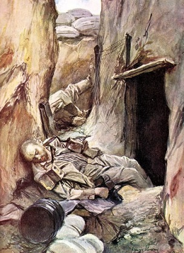
- Avancez, nom de Dieu !….
On hésitait encore à fouler ce dallage qui s’enfonçait, puis, poussés par les autres, on avança sans regarder, pataugeant dans la Mort... Par un caprice démoniaque, elle n'avait épargné que les choses : sur dix mètres de boyau, intacts dans leurs petites niches, des casques à pointe étaient rangés, habillés d’un manchon de toile, Des camarades s’en emparèrent. D'autres décrochaient des musettes, des bidons.
- Vise la belle paire de pompes ! beugla Sulphart, agitant deux bottes jaunes.
À La sortie du boyau, un sergent accroupi criait :
« À gauche, en tirailleurs, à gauche !» et la file repartait en courant sur une petite route que bordait un fossé, Plus loin, dans les champs, on ne voyait qu'un réseau de fils de fer, à demi caché par l'herbe folle... Et pas une tranchée, pas un Allemand, pas un coup de feu.
Extraits - Les Croix de bois - Roland DORGELES
… Désiré meurt au combat le 27 Septembre 1915, au sortir des tranchées, dans une charge à la baïonnette …
… De lui restent une citation dans son livret militaire et son nom sur le monument aux morts de Virlet …
… Maria restera toute sa vie à la ferme des Raynauds et ne se mariera jamais.
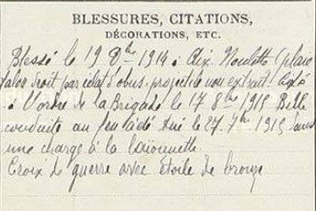
Des Sillons aux Tranchées